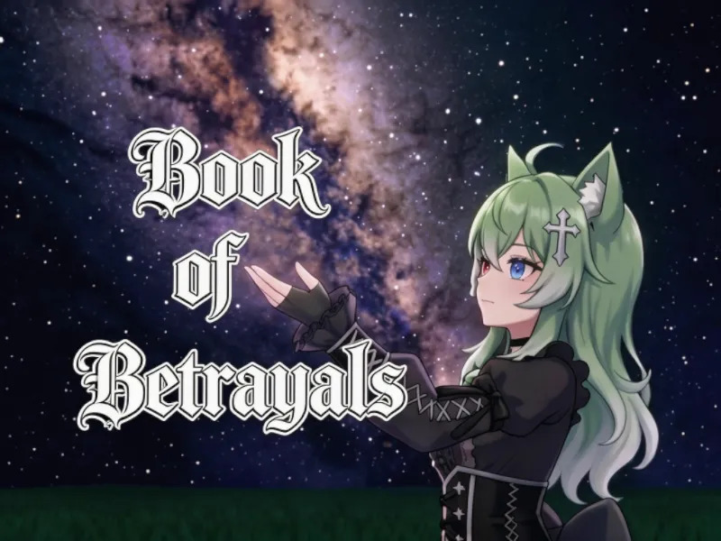

星辉落系列 · VRChat 阅读世界
萝北创作的长篇小说，部分情节取材于真实经历。上篇已经完结，共五章、219 篇，约七万字，目前可以在 VRChat 中阅读。

《背叛书·人人害人人》是萝北创作的长篇小说，部分情节取材于真实经历。上篇已经完结，共五章、219 篇，约七万字，目前可以在 VRChat 中阅读。
故事从萝北进入虚拟世界「星铭世界」前后写起。她原本过着孤独的生活，来到这里后认识了一些朋友，也开始追求清野。和对方一起看风景、拍照、亲热，让她对这段关系有了很多期待。但两人对关系的理解并不一致，萝北想要更多陪伴和明确的名分，清野的回应却常常让她困惑。随着霜白等人加入，几个人之间的关系变得更加复杂。
小说写了这些关系发展的具体过程，包括怎样开始亲近、怎样理解对方的话，以及发生矛盾之后怎样尝试挽回。萝北常常替朋友分析感情问题，也相信自己能够处理好自己的关系。但她同样会因为嫉妒和不安做出伤害别人的事，有时还会替别人作决定。书中既记录了她被背叛的经历，也写下了她背叛他人的部分。
「不要找砂糖」是这部小说的主题之一。「砂糖」在故事中指情侣或恋人。萝北希望找到一段能够长久维持的亲密关系，为此反复尝试，也一次次陷入自己原本想避免的问题。
共五章、219 篇，约七万字，写到萝北进入星铭世界、追求爱情，以及后来几位主要角色之间的冲突。
上篇包括《向死而飞》《浮空梦境》《星辉落》《叫我笨蛋》和《尚方宝剑》。
小说采用经文体，按篇编号，每篇相对独立。可以从任意一篇开始读，按顺序阅读则能更完整地了解人物关系和事情的经过。
小说文字放在星空草地上的石碑中，读者可以走到石碑前阅读，也可以暂时不读，只游览世界。
作品属于星辉落系列。小说保留了萝北在关系中的困惑与过失，也记录了她受到的伤害。
读者群组名为「不要找砂糖」，在 VRChat 群组中搜索 NOSGR 即可找到。
本书涉及亲密关系中的背叛、情感操控、分离焦虑、依赖关系、心理创伤及强烈负面情绪，部分内容可能引起不适或唤起不愉快的回忆。如果暂时不想阅读，也可以只游览世界。
🍎